#1 · QA2026-08-14 14:50 → 08-14 16:20
+33.5 pts
entry 30098.25 stop 30068.50 (−29.8 pts) target 30157.75 (2.0R) exit 30131.75 timeout 盤整 30073.50–30090.25 區間 16.8 帶寬 14.0 量能 2.19x 實體 10.8 前回檔 46.0
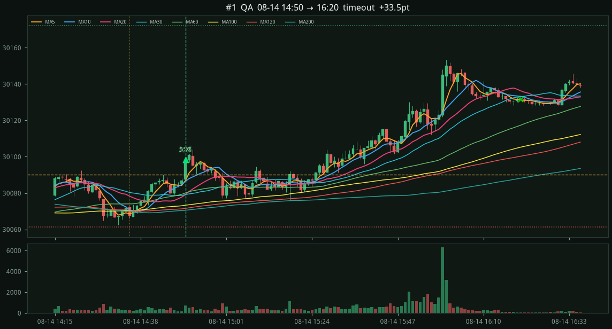
10d · 2026-08-14 08:55 → 2026-08-24 08:44 · bars=8207 · MA 5, 10, 20, 30, 60, 100, 120, 200
QA 22筆 +67.2 · QB 3筆 -47.0 · QC 2筆 -41.2
漏斗：檢查 6819 → 盤整箱 2764 → 等待突破 3230 → 長實體 123 → 站上盤整 481 → 站上均線 525 → 放量 448 → 進場 27
entry 30098.25 stop 30068.50 (−29.8 pts) target 30157.75 (2.0R) exit 30131.75 timeout 盤整 30073.50–30090.25 區間 16.8 帶寬 14.0 量能 2.19x 實體 10.8 前回檔 46.0

entry 30145.00 stop 30102.50 (−42.5 pts) target 30230.00 (2.0R) exit 30193.50 timeout 盤整 30107.50–30130.00 區間 22.5 帶寬 40.9 量能 13.40x 實體 22.2 前回檔 80.2
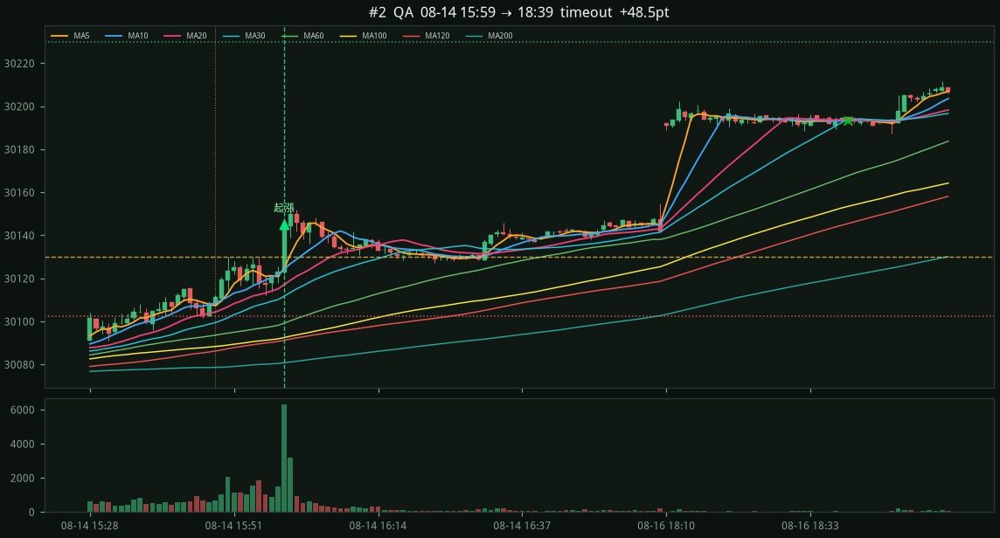
entry 30215.00 stop 30180.50 (−34.5 pts) target 30284.00 (2.0R) exit 30218.50 timeout 盤整 30185.50–30198.00 區間 12.5 帶寬 11.8 量能 4.23x 實體 14.0 前回檔 42.5
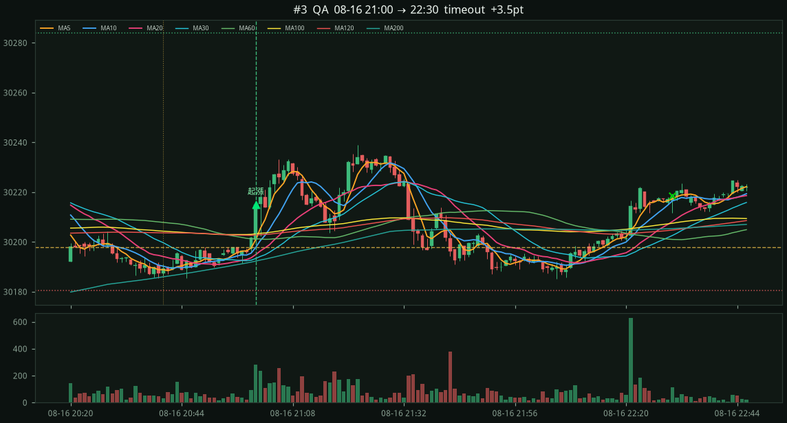
entry 30214.50 stop 30180.25 (−34.2 pts) target 30283.00 (2.0R) exit 30241.75 timeout 盤整 30185.25–30200.50 區間 15.2 帶寬 11.9 量能 11.37x 實體 12.0 前回檔 53.8
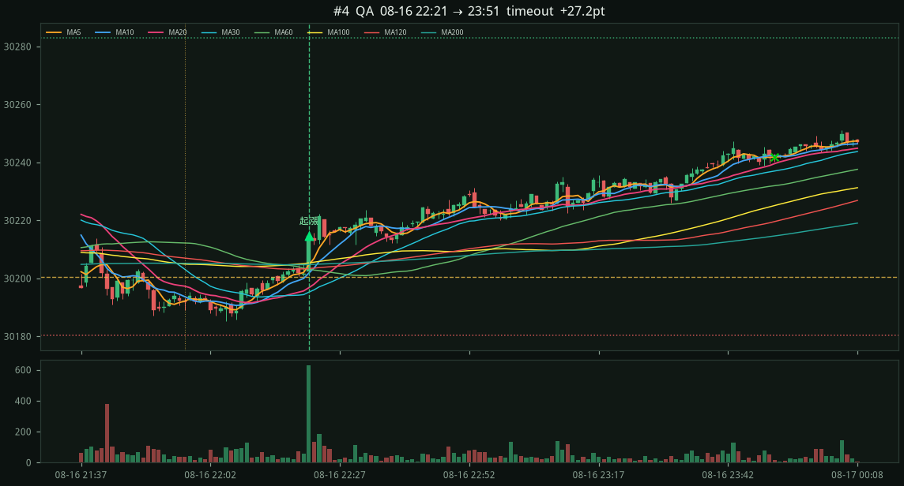
entry 30338.00 stop 30274.00 (−64.0 pts) target 30466.00 (2.0R) exit 30286.75 timeout 盤整 30279.00–30303.25 區間 24.2 帶寬 10.7 量能 24.99x 實體 52.5 前回檔 51.8
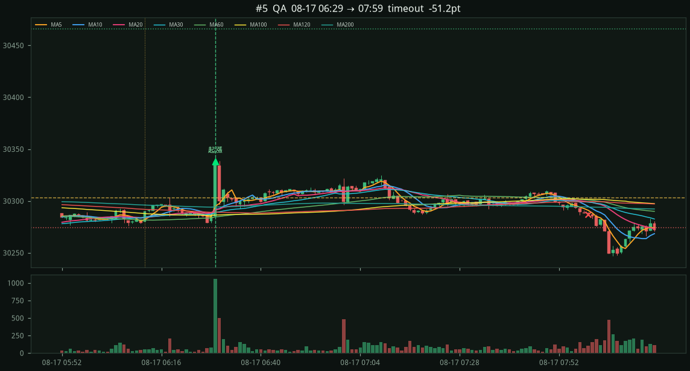
entry 29895.00 stop 29860.50 (−34.5 pts) target 29964.00 (2.0R) exit 29860.50 stop 盤整 29865.50–29877.75 區間 12.2 帶寬 28.5 量能 2.15x 實體 18.2 前回檔 141.2
entry 29780.25 stop 29737.50 (−42.8 pts) target 29865.75 (2.0R) exit 29737.50 stop 盤整 29742.50–29764.50 區間 22.0 帶寬 14.9 量能 3.69x 實體 23.5 前回檔 78.5
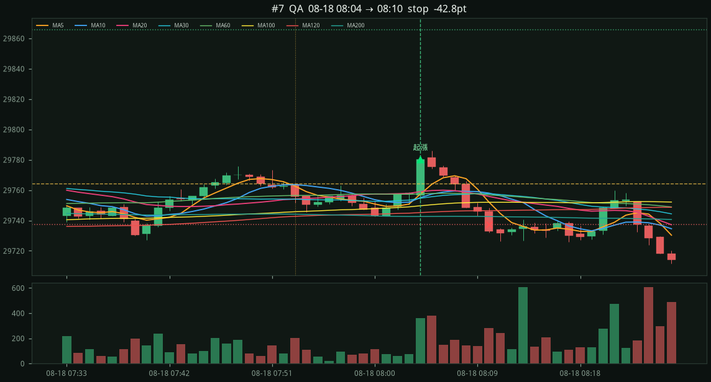
entry 29737.25 stop 29677.00 (−60.2 pts) target 29857.75 (2.0R) exit 29677.00 stop 盤整 29682.00–29708.50 區間 26.5 帶寬 38.1 量能 26.24x 實體 23.0 前回檔 105.5
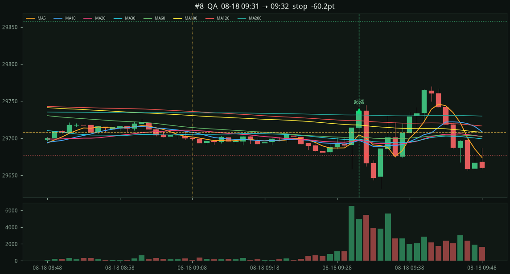
entry 29565.75 stop 29516.00 (−49.8 pts) target 29665.25 (2.0R) exit 29516.00 stop 盤整 29521.00–29536.00 區間 15.0 帶寬 39.2 量能 8.17x 實體 33.5 前回檔 79.2
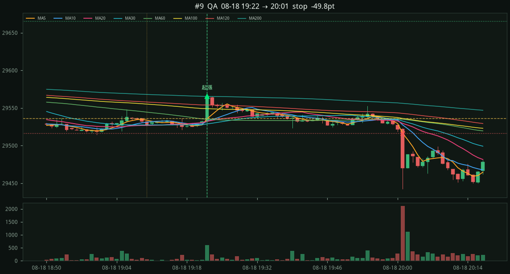
entry 29584.00 stop 29542.75 (−41.2 pts) target 29666.50 (2.0R) exit 29542.75 stop 盤整 29547.75–29578.75 區間 31.0 帶寬 41.1 量能 2.10x 實體 11.0 前回檔 144.0
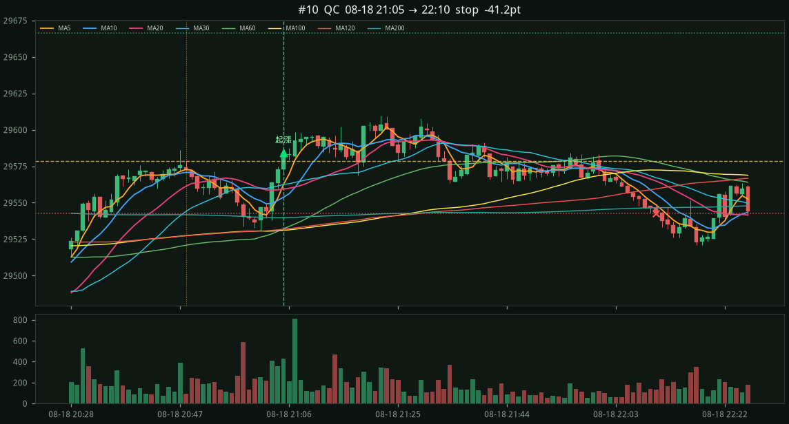
entry 29565.00 stop 29514.75 (−50.2 pts) target 29665.50 (2.0R) exit 29514.75 stop 盤整 29519.75–29541.00 區間 21.2 帶寬 19.6 量能 4.41x 實體 10.8 前回檔 95.5
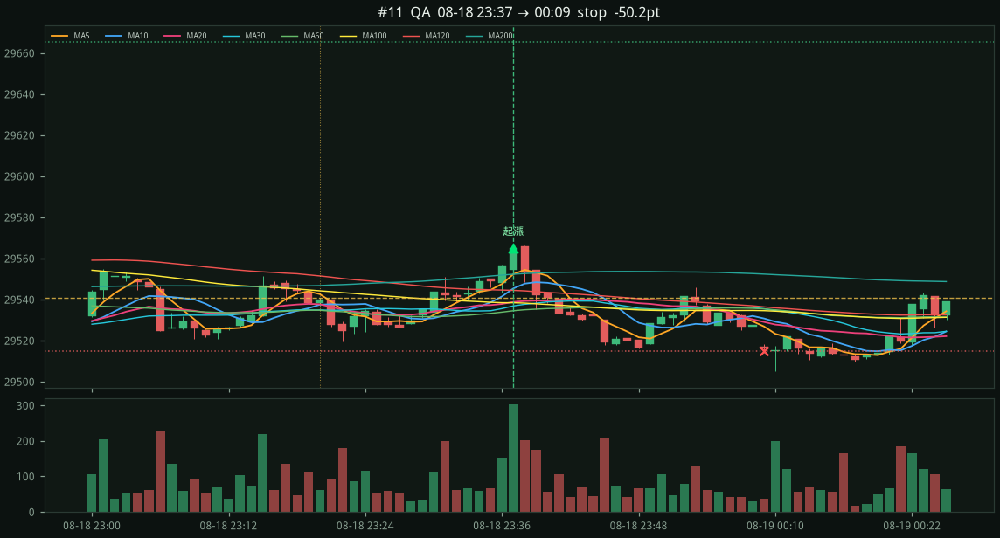
entry 29504.75 stop 29455.00 (−49.8 pts) target 29604.25 (2.0R) exit 29604.25 target 盤整 29460.00–29489.75 區間 29.8 帶寬 31.5 量能 2.96x 實體 13.0 前回檔 104.5
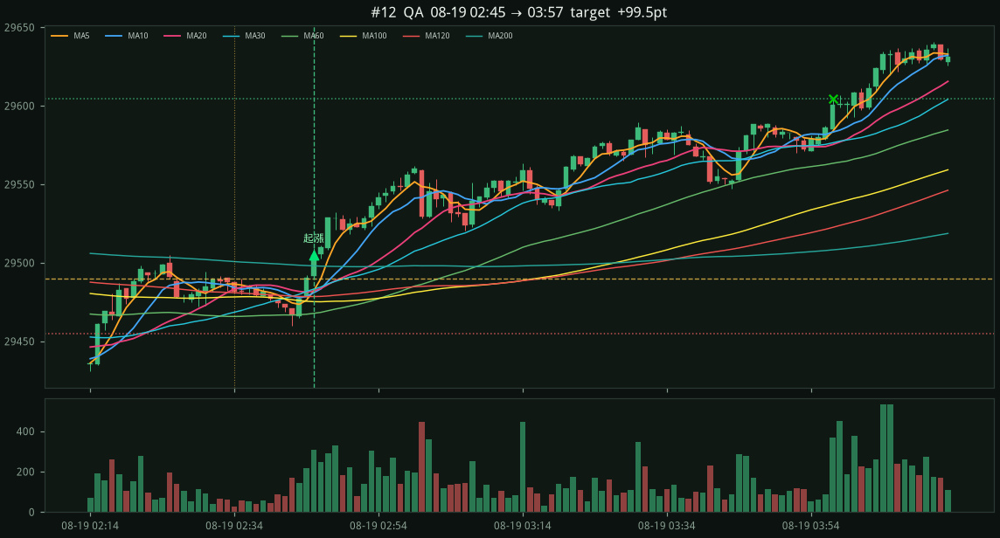
entry 29555.25 stop 29505.25 (−50.0 pts) target 29655.25 (2.0R) exit 29655.25 target 盤整 29510.25–29537.50 區間 27.2 帶寬 36.1 量能 2.76x 實體 13.5 前回檔 71.2
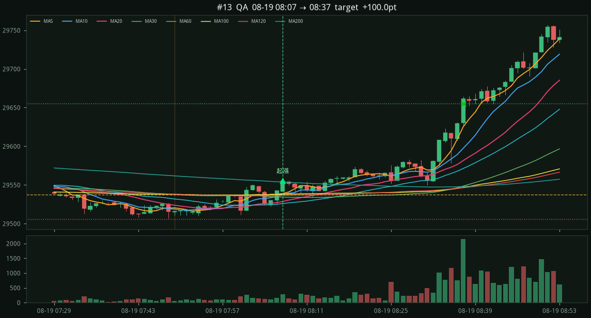
entry 29594.50 stop 29541.25 (−53.2 pts) target 29701.00 (2.0R) exit 29650.25 timeout 盤整 29546.25–29579.50 區間 33.2 帶寬 28.3 量能 4.33x 實體 29.2 前回檔 104.8
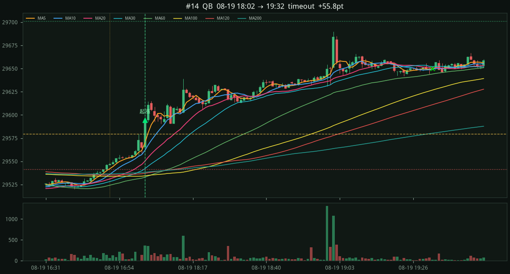
entry 29658.75 stop 29605.00 (−53.8 pts) target 29766.25 (2.0R) exit 29605.00 stop 盤整 29610.00–29640.50 區間 30.5 帶寬 25.2 量能 2.31x 實體 13.5 前回檔 74.2
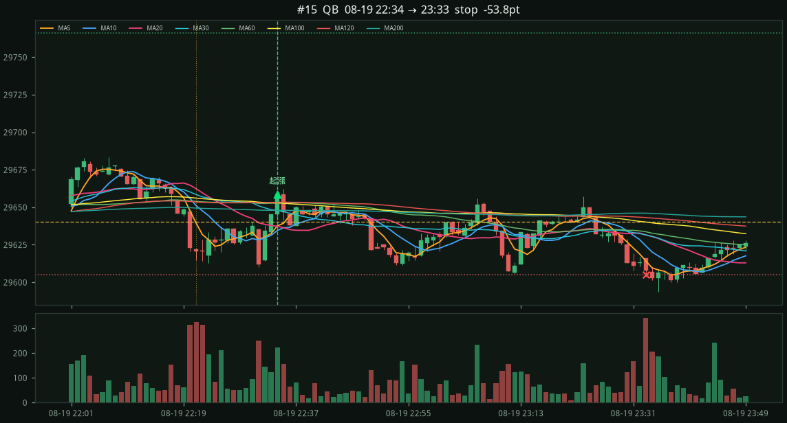
entry 29626.50 stop 29594.75 (−31.8 pts) target 29690.00 (2.0R) exit 29626.50 stop 盤整 29599.75–29616.00 區間 16.2 帶寬 19.5 量能 3.05x 實體 16.5 前回檔 68.2
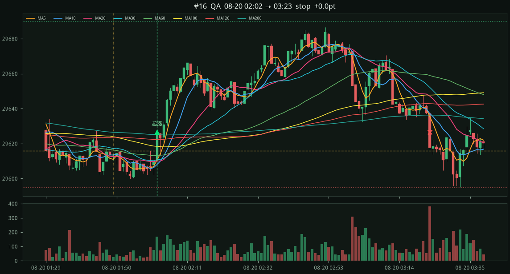
entry 29566.00 stop 29533.50 (−32.5 pts) target 29631.00 (2.0R) exit 29533.50 stop 盤整 29538.50–29560.25 區間 21.8 帶寬 18.2 量能 2.94x 實體 15.0 前回檔 111.2
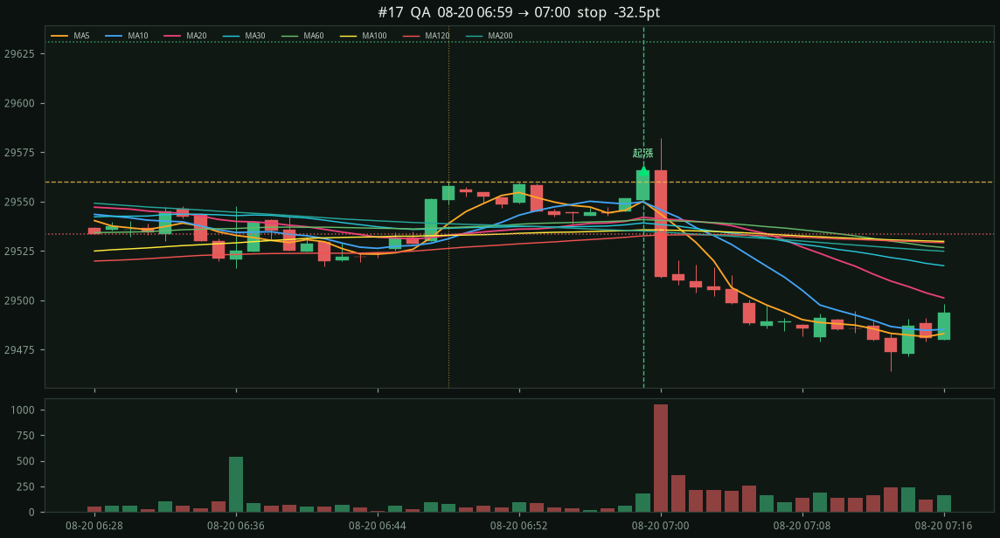
entry 29328.25 stop 29287.25 (−41.0 pts) target 29410.25 (2.0R) exit 29328.25 stop 盤整 29292.25–29315.25 區間 23.0 帶寬 15.9 量能 5.79x 實體 21.5 前回檔 71.5
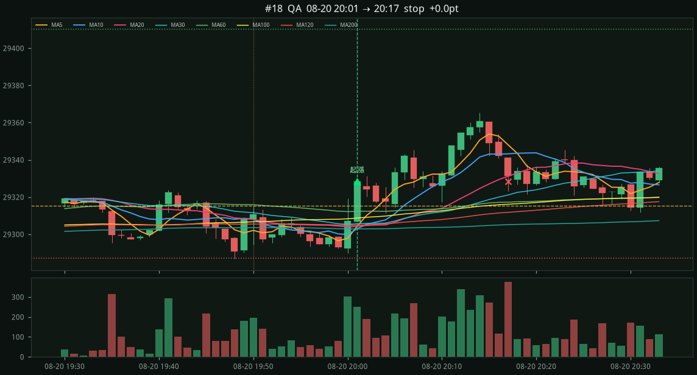
entry 29352.25 stop 29315.25 (−37.0 pts) target 29426.25 (2.0R) exit 29361.50 timeout 盤整 29320.25–29347.25 區間 27.0 帶寬 15.9 量能 2.58x 實體 10.2 前回檔 78.8
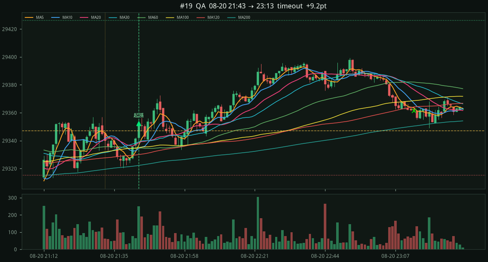
entry 29359.75 stop 29316.25 (−43.5 pts) target 29446.75 (2.0R) exit 29370.75 timeout 盤整 29321.25–29338.50 區間 17.2 帶寬 31.3 量能 3.20x 實體 13.2 前回檔 78.0
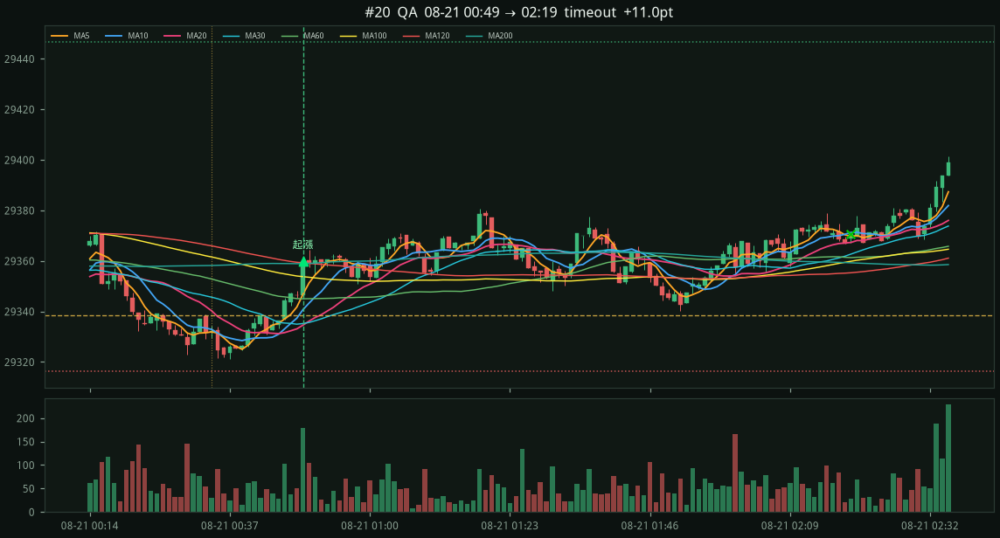
entry 29432.25 stop 29385.50 (−46.8 pts) target 29525.75 (2.0R) exit 29432.25 stop 盤整 29390.50–29424.50 區間 34.0 帶寬 34.6 量能 2.56x 實體 11.0 前回檔 98.8
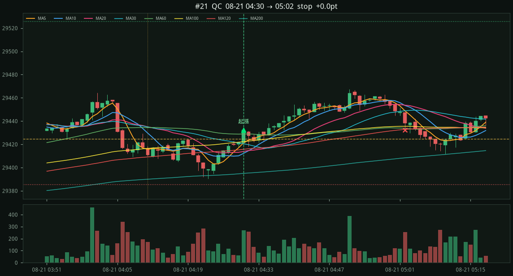
entry 29455.00 stop 29424.75 (−30.2 pts) target 29515.50 (2.0R) exit 29515.50 target 盤整 29429.75–29445.50 區間 15.8 帶寬 21.9 量能 5.93x 實體 13.2 前回檔 77.0
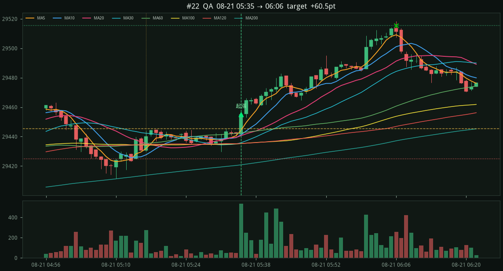
entry 29507.50 stop 29455.50 (−52.0 pts) target 29611.50 (2.0R) exit 29513.25 timeout 盤整 29460.50–29482.50 區間 22.0 帶寬 22.3 量能 5.15x 實體 12.2 前回檔 107.0
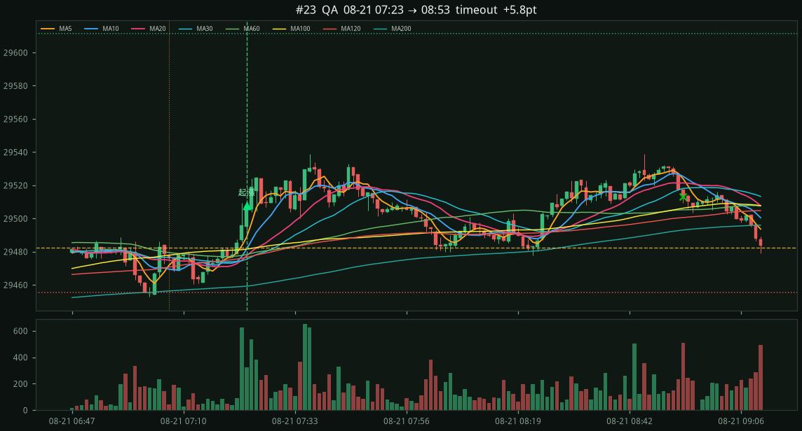
entry 29394.50 stop 29330.00 (−64.5 pts) target 29523.50 (2.0R) exit 29408.25 timeout 盤整 29335.00–29346.00 區間 11.0 帶寬 41.3 量能 2.27x 實體 13.2 前回檔 119.2
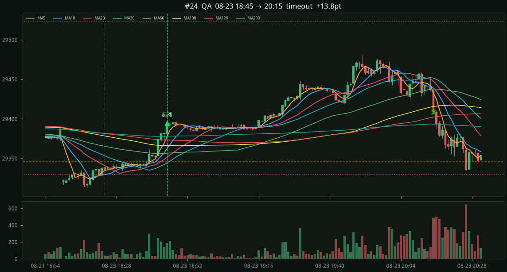
entry 29223.25 stop 29172.25 (−51.0 pts) target 29325.25 (2.0R) exit 29232.00 timeout 盤整 29177.25–29207.00 區間 29.8 帶寬 26.4 量能 3.94x 實體 14.5 前回檔 95.8
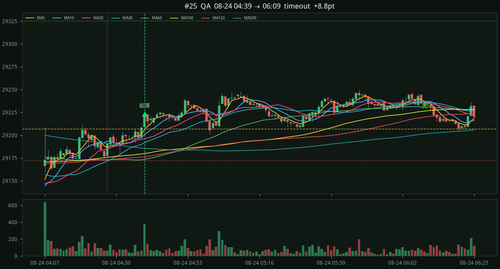
entry 29232.00 stop 29199.25 (−32.8 pts) target 29297.50 (2.0R) exit 29199.25 stop 盤整 29204.25–29223.75 區間 19.5 帶寬 23.2 量能 3.40x 實體 10.8 前回檔 78.0
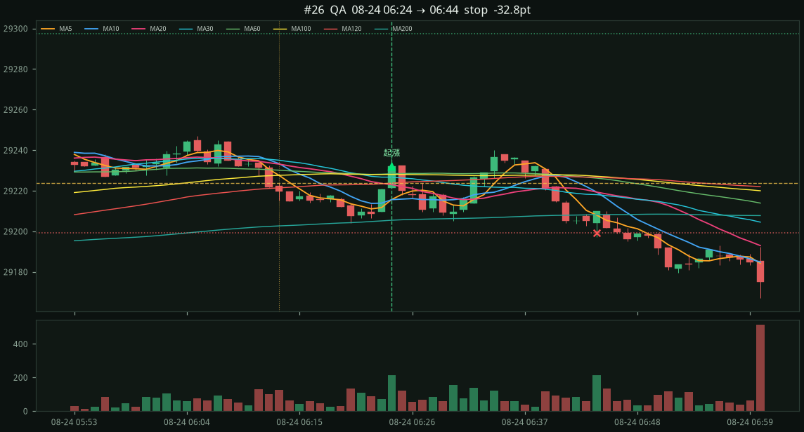
entry 29247.25 stop 29166.75 (−80.5 pts) target 29408.25 (2.0R) exit 29198.25 timeout 盤整 29171.75–29203.00 區間 31.2 帶寬 38.5 量能 7.79x 實體 21.8 前回檔 104.0
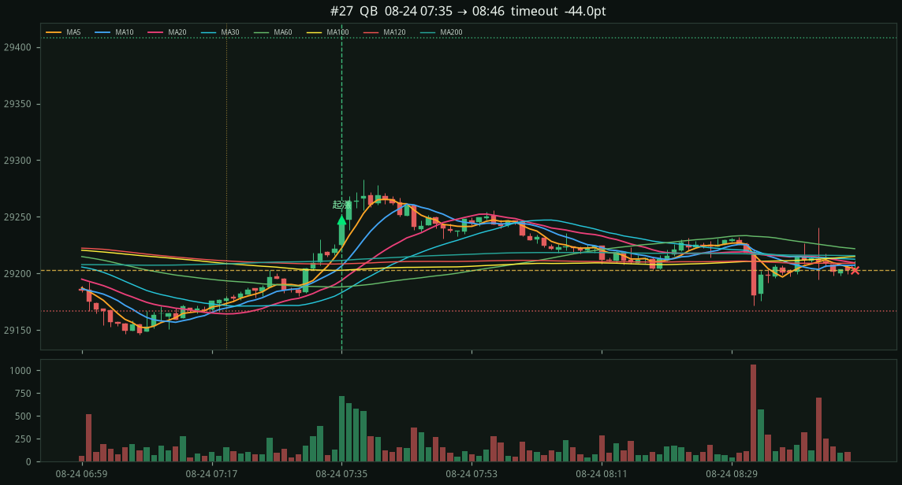